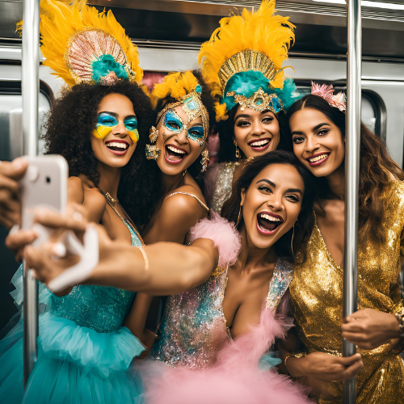

Carnaval em São Paulo!
Fomos de trem até um bloco de carnaval.
Sentido-seFeliz
Estação Tucuruvi
Data de Publicação: 20/02/2023
Data que ocorreu: 05/02/2024

Era uma manhã ensolarada de carnaval e a animação estava a mil por aqui. Eu e minhas amigas decidimos nos
encontrar na estação do metrô para irmos juntas para o desfile em São Paulo. Desde cedo, a expectativa estava
nas alturas: cada uma tinha escolhido sua fantasia e a vibe de festa já começava na estação.
Quando cheguei, vi que todas estavam incríveis. Tinha uma de sereia, outra de pirata, e eu fui de bailarina, com
uma saia cheia de tule e glitter por todo lado. Assim que nos reunimos, não conseguimos segurar o riso. O clima
era de pura alegria e, enquanto aguardávamos o trem, já começamos a fazer coreografias improvisadas, tirando
fotos e chamando a atenção de quem passava.
Quando o metrô chegou, mal conseguíamos conter a empolgação. Entramos no vagão e logo o ambiente virou uma
verdadeira festa. Com a música alta tocando nas nossas cabeças, começamos a dançar e cantar as marchinhas de
carnaval que tanto amamos. As pessoas ao nosso redor, que inicialmente estavam sérias, logo se deixaram levar
pela nossa animação. Algumas começaram a bater palmas e a entrar na dança!
A cada estação que passava, mais e mais foliões entravam e o vagão ia se enchendo. Uma senhora idosa começou a
rir ao nos ver e até se juntou a nós, fazendo movimentos divertidos com as mãos. A energia estava contagiante.
Um grupo de rapazes ao nosso lado puxou uma bateria improvisada com as mochilas e, em poucos minutos, o vagão
estava todo integrado em um mini bloco de carnaval.
Foi um momento mágico. Entre risadas e danças, tiramos várias fotos, cada uma mais divertida que a outra. Uma
amiga, que sempre tem as melhores ideias, trouxe confetes e serpentinas e começamos a jogar tudo para o alto,
fazendo uma chuva de cores dentro do metrô. Foi um verdadeiro espetáculo!
Quando finalmente chegamos à estação do desfile, descemos do trem com um grito de alegria. A energia lá fora era
eletrizante: música alta, pessoas fantasiadas, e o cheiro de comida de rua. Sentimos que o carnaval realmente
começava ali. Com os sorrisos no rosto e os corações pulsando de felicidade, fomos em direção ao nosso bloco,
prontas para viver uma das melhores experiências das nossas vidas.
A viagem de metrô não foi só um deslocamento; foi o início de uma celebração que eu sabia que ia ficar marcada
para sempre na nossa memória. Com amigas assim, o carnaval se torna ainda mais especial!
Leia sobre mais histórias!